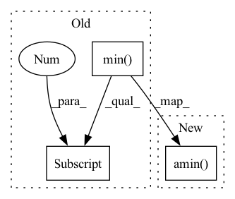

Pattern ID :8821

Before Change
for layer in all_ps.keys():
ps = all_ps[layer] // (C, n_samples, batch_size, num_classes)
vs: torch.Tensor = ps[:, self.n_samples // 5:].max(dim=1)[0] \
- ps[:, :self.n_samples // 5].min(dim=1)[0] // (C, batch_size, num_classes)
values, labels = vs.sort(dim=-1, descending=True)
condition1 = labels[:, :, 0].eq(_label) // exclude the ground-truth labels
values = torch.where(condition1, values[:, :, 1] - values[:, :, 2],
After Change
for layer in all_ps.keys():
ps = all_ps[layer] // (C, n_samples, batch_size, num_classes)
vs: torch.Tensor = ps[:, self.n_samples // 5:].amax(dim=1) \
- ps[:, :self.n_samples // 5].amin(dim=1) // (C, batch_size, num_classes)
values, labels = vs.sort(dim=-1, descending=True)
condition1 = labels[:, :, 0].eq(_label) // exclude the ground-truth labels
values = torch.where(condition1, values[:, :, 1] - values[:, :, 2],
In pattern: SUPERPATTERN
Frequency: 4
Non-data size: 3
Instances
Fragment ID: 32493223
Project Name: ain-soph/trojanzoo
Commit Name: ad01410bb591b641aa0763ae63169c6d18f1720c
Time: 2021-11-26
Author: ain-soph@live.com
File Name: trojanvision/attacks/backdoor/imc_variants/imc_adaptive.py
M Class Name: IMC_Adaptive
N Class Name: IMC_Adaptive
M Method Name: find_min_max(3)
N Method Name: find_min_max(3)
M Parent Class: IMC
N Parent Class: IMC
M File Name: trojanvision/attacks/backdoor/imc_variants/imc_adaptive.py
N File Name: trojanvision/attacks/backdoor/imc_variants/imc_adaptive.py
M Start Line: 136
M End Line: 137
N Start Line: 136
N End Line: 137
'>
Before Change
for layer in all_ps.keys():
ps = all_ps[layer] // (C, n_samples, batch_size, num_classes)
vs: torch.Tensor = ps[:, self.n_samples // 5:].max(dim=1)[0] \
- ps[:, :self.n_samples // 5].min(dim=1)[0] // (C, batch_size, num_classes)
values, labels = vs.sort(dim=-1, descending=True)
condition1 = labels[:, :, 0].eq(_label) // exclude the ground-truth labels
values = torch.where(condition1, values[:, :, 1] - values[:, :, 2],
After Change
for layer in all_ps.keys():
ps = all_ps[layer] // (C, n_samples, batch_size, num_classes)
vs: torch.Tensor = ps[:, self.n_samples // 5:].amax(dim=1) \
- ps[:, :self.n_samples // 5].amin(dim=1) // (C, batch_size, num_classes)
values, labels = vs.sort(dim=-1, descending=True)
condition1 = labels[:, :, 0].eq(_label) // exclude the ground-truth labels
values = torch.where(condition1, values[:, :, 1] - values[:, :, 2],
'>
Fragment ID: 32493222
Project Name: ain-soph/trojanzoo
Commit Name: ad01410bb591b641aa0763ae63169c6d18f1720c
Time: 2021-11-26
Author: ain-soph@live.com
File Name: trojanvision/attacks/backdoor/imc_variants/imc_abs.py
M Class Name: IMC_ABS
N Class Name: IMC_ABS
M Method Name: find_min_max(3)
N Method Name: find_min_max(3)
M Parent Class: IMC
N Parent Class: IMC
M File Name: trojanvision/attacks/backdoor/imc_variants/imc_abs.py
N File Name: trojanvision/attacks/backdoor/imc_variants/imc_abs.py
M Start Line: 121
M End Line: 122
N Start Line: 121
N End Line: 122
'>
Before Change
for layer in all_ps.keys():
ps = all_ps[layer] // (C, n_samples, batch_size, num_classes)
vs: torch.Tensor = ps[:, self.n_samples // 5:].max(dim=1)[0] \
- ps[:, :self.n_samples // 5].min(dim=1)[0] // (C, batch_size, num_classes)
values, labels = vs.sort(dim=-1, descending=True)
condition1 = labels[:, :, 0].eq(_label) // exclude the ground-truth labels
values = torch.where(condition1, values[:, :, 1] - values[:, :, 2],
After Change
for layer in all_ps.keys():
ps = all_ps[layer] // (C, n_samples, batch_size, num_classes)
vs: torch.Tensor = ps[:, self.n_samples // 5:].amax(dim=1) \
- ps[:, :self.n_samples // 5].amin(dim=1) // (C, batch_size, num_classes)
values, labels = vs.sort(dim=-1, descending=True)
condition1 = labels[:, :, 0].eq(_label) // exclude the ground-truth labels
values = torch.where(condition1, values[:, :, 1] - values[:, :, 2],
'>
Fragment ID: 32493221
Project Name: ain-soph/trojanzoo
Commit Name: ad01410bb591b641aa0763ae63169c6d18f1720c
Time: 2021-11-26
Author: ain-soph@live.com
File Name: trojanvision/defenses/backdoor/abs.py
M Class Name: ABS
N Class Name: ABS
M Method Name: find_min_max(3)
N Method Name: find_min_max(3)
M Parent Class: BackdoorDefense
N Parent Class: BackdoorDefense
M File Name: trojanvision/defenses/backdoor/abs.py
N File Name: trojanvision/defenses/backdoor/abs.py
M Start Line: 311
M End Line: 312
N Start Line: 311
N End Line: 312
'>
Before Change
_input.requires_grad_(False)
heatmap = grad.abs().max(dim=1)[0] // (N,H,W)
heatmap.sub_(heatmap.min(dim=-2, keepdim=True)
[0].min(dim=-1, keepdim=True)[0])
heatmap.div_(heatmap.max(dim=-2, keepdim=True)
[0].max(dim=-1, keepdim=True)[0])
heatmap = apply_cmap(heatmap.detach().cpu(), cmap)
After Change
_input.requires_grad_(False)
heatmap = grad.abs().amax(dim=1) // (N,H,W)
heatmap.sub_(heatmap.amin(dim=-2, keepdim=True).amin(dim=-1, keepdim=True))
heatmap.div_(heatmap.amax(dim=-2, keepdim=True).amax(dim=-1, keepdim=True))
heatmap = apply_cmap(heatmap.detach().cpu(), cmap)
return heatmap[0] if squeeze_flag else heatmap
'>
Fragment ID: 32493220
Project Name: ain-soph/trojanzoo
Commit Name: ad01410bb591b641aa0763ae63169c6d18f1720c
Time: 2021-11-26
Author: ain-soph@live.com
File Name: trojanvision/models/imagemodel.py
M Class Name: ImageModel
N Class Name: ImageModel
M Method Name: get_heatmap(5)
N Method Name: get_heatmap(5)
M Parent Class: Model
N Parent Class: Model
M File Name: trojanvision/models/imagemodel.py
N File Name: trojanvision/models/imagemodel.py
M Start Line: 220
M End Line: 234
N Start Line: 220
N End Line: 231